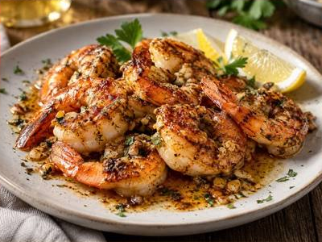

← Back to all recipes
SEAFOOD · CAJUN
Cajun Garlic Butter Shrimp
Juicy shrimp seared with Cajun seasoning and finished in garlicky browned butter and lemon.
20 minServes 4

Ingredients
- 1½ lb large shrimp
- 2 tsp Cajun seasoning
- 1 tbsp olive oil
- 4 tbsp unsalted butter
- 5 garlic cloves, minced
- 1 lemon
- 2 tbsp chopped parsley
- Salt and black pepper
Preparation
- Pat shrimp dry and season with Cajun seasoning.
- Heat olive oil in a skillet over medium-high and sear shrimp 1–2 minutes per side; remove.
- Lower heat and melt butter. Add garlic and cook until fragrant and lightly golden.
- Return shrimp to the skillet, add lemon juice and parsley, and toss until coated.
- Serve immediately with extra lemon.